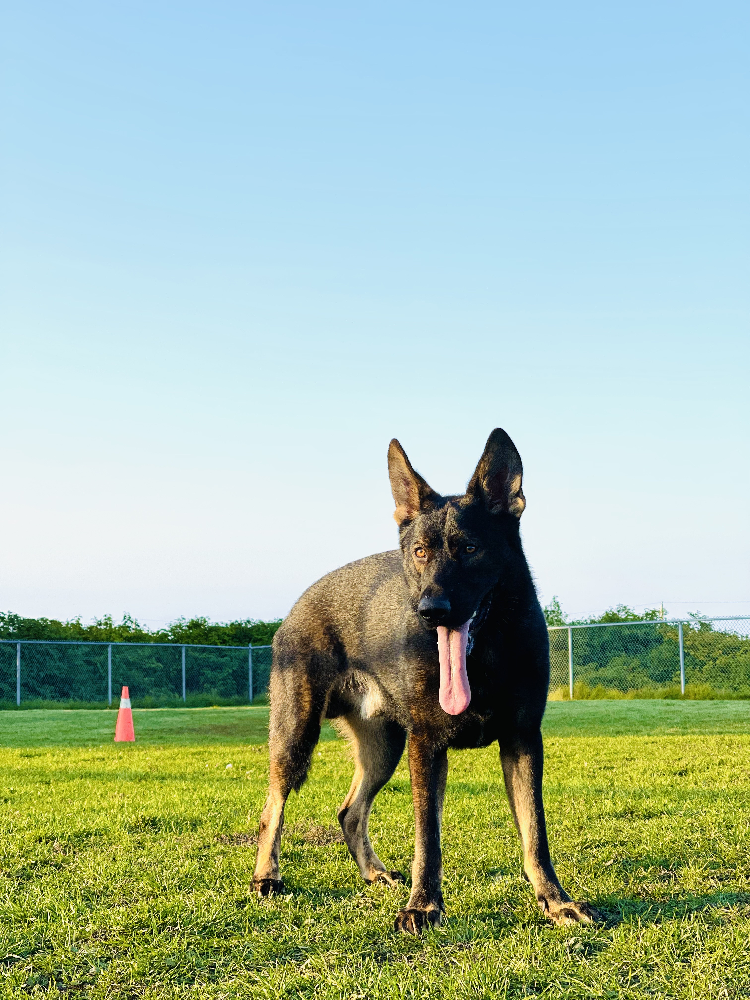

 Chewbarker.ca
Chewbarker.caAbout Chewbarker.ca
Chewbarker.ca is a collection of information specifically related to the German Shepherd breed. This site is a useful tool for anyone looking to learn more about this breed of dog or for current owners to stay up-to-date with the breed and connect with other GSD owners. Thank you for visiting my website and please add a pic of your pup on the gallery page!
About Me
I’m a second year computer science university student who created this website for my Web Development subject. I decided to create a website about ‘Chewbarker’ who is my (almost) two year old Sable German Shepherd. When researching German Shepherd’s, there was a lot of misinformation about the breed and I wanted a central hub where people could learn about the gsd and about my experience with Chewbarker.